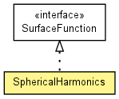

toxi.geom.mesh
Class SphericalHarmonics
java.lang.Object
 toxi.geom.mesh.SphericalHarmonics
toxi.geom.mesh.SphericalHarmonics
- All Implemented Interfaces:
- SurfaceFunction
public class SphericalHarmonics
- extends java.lang.Object
- implements SurfaceFunction

Spherical harmonics surface evaluator based on code by Paul Bourke:
http://local.wasp.uwa.edu.au/~pbourke/geometry/sphericalh/
| Methods inherited from class java.lang.Object |
equals, getClass, hashCode, notify, notifyAll, toString, wait, wait, wait |
SphericalHarmonics
public SphericalHarmonics(float[] m)
computeVertexFor
public Vec3D computeVertexFor(Vec3D p,
float phi,
float theta)
- Specified by:
computeVertexFor in interface SurfaceFunction
getPhiRange
public float getPhiRange()
- Specified by:
getPhiRange in interface SurfaceFunction
getPhiResolutionLimit
public int getPhiResolutionLimit(int res)
- Specified by:
getPhiResolutionLimit in interface SurfaceFunction
getThetaRange
public float getThetaRange()
- Specified by:
getThetaRange in interface SurfaceFunction
getThetaResolutionLimit
public int getThetaResolutionLimit(int res)
- Specified by:
getThetaResolutionLimit in interface SurfaceFunction